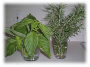

kkoisland.com
[前の日記]
[次の日記]
'*★
ハーブ
★*'
..*..*..
2003年5月10日(土) 晴れ
..*..*..

ハーブ類は買って来てから、こんな風にコップに入れて飾ってもきれいです。必要な分はお料理に使います。バジルは水栽培にしてもいいそうです(みちさん談)。栄養素を与えておくと育つので、いつまでも鑑賞したり、お料理に使ったりできるそう。
うちは、部屋の中の温度が高すぎてしばらくするとダメになってしまいます。それでも、根っこが生えてくるので、1か月くらいは持ちます。バジルの白い花が咲くこともあるんですよ。ハーブは強い植物ですね。
..*..*..*..*..*..*..*..*..*..*..*..*..*..*..*..*..*..*..*..*..*..